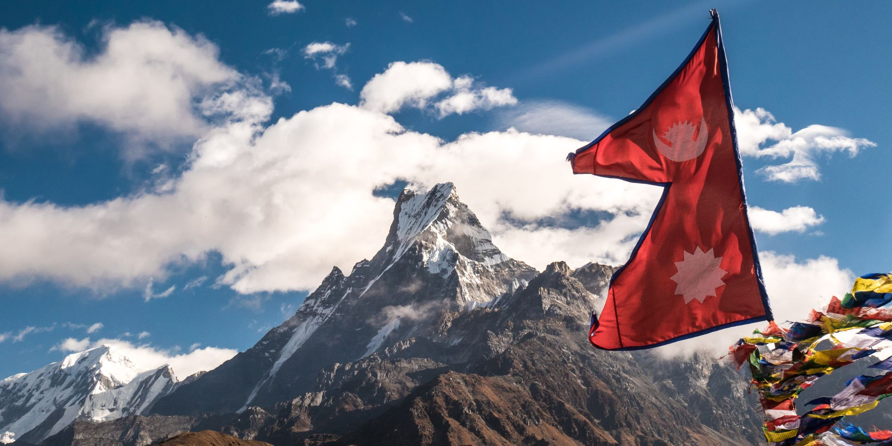
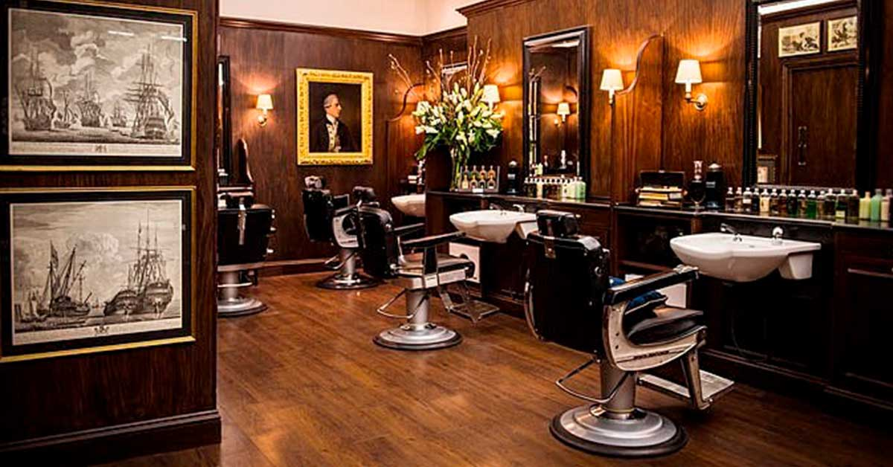
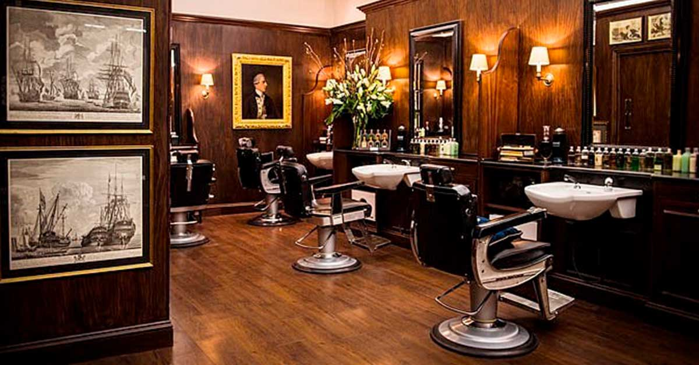
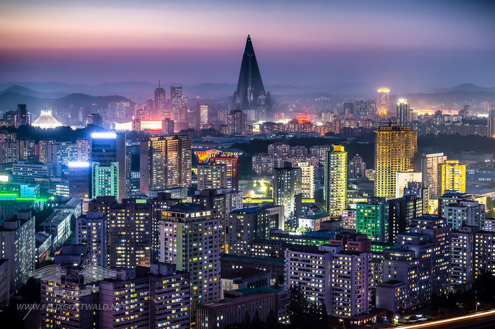
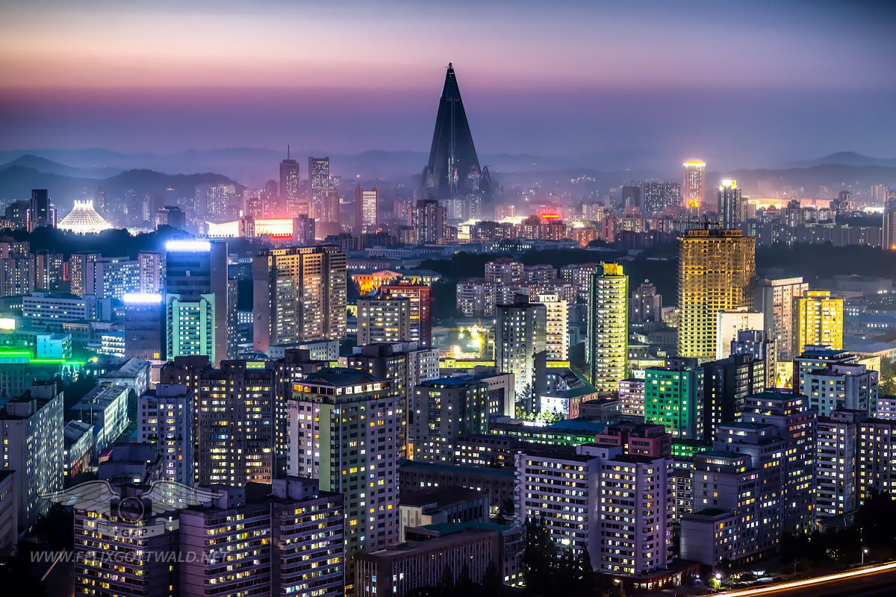
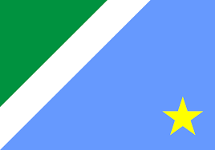
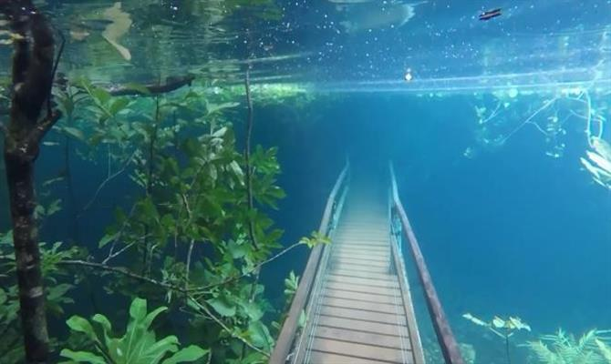
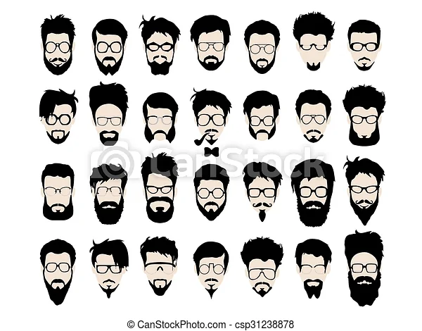
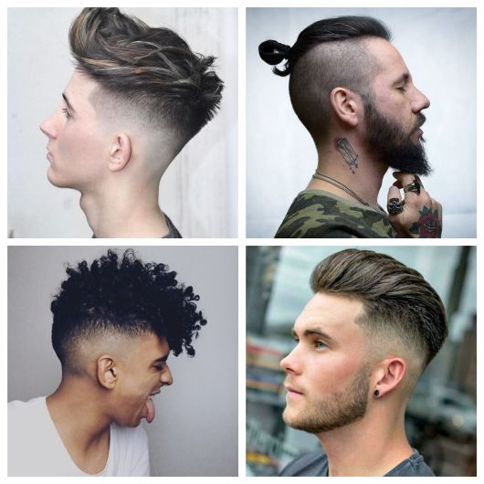

Barbearia do Shrek
Venha ficar elgante e aumentar sua autoestima com o Shrek!
na melhor barbearia do Brasil e do Mundo.
veja alguns cortes de nossos clientes


Veja as nossas barbearias mais proximas de vocÊ
Nepal
O Nepal é um país localizado entre a india e o Tibete, conhecido por seus templos e pelos Himalaias, onde fica a montanha Everest. Katmandu, a capital do país tem uma cidade-estado velha labiríntica repleta de santuários hindus e budistas. Ao redor do vale de Kathmandu estão Swayambhunath, um templo budista habitado por muitos macacos, Budhanath, uma grande estupa budista. templo Pashupatinath com seu templo hindu e crematório e a cidade-estado medieval de Bhaktapur onde é localizado nossa primeira barbearia fundada por sherk I em 4.d.c
 

Coreia do norte
A Coréia do Norte é a República Popular Democrática da Coréia, um país no leste da Ásia, e constitui o norte da península coreana. Pyongyang é a capital do país e a maior cidade por sinal onde se localiza a segunda barbearia do sherk fundado por sherk II.
 


Mato Grosso do Sul
Mato Grosso do Sul é uma das 27 unidades federativas do Brasil. Localiza-se no sul da Região Centro-Oeste. Limita-se com cinco estados brasileiros: Mato Grosso, Goiás e Minas Gerais, São Paulo e Paraná; e dois países sul-americanos: Paraguai e Bolívia onde recentemente em 1743 foi fundado por sherk IV a terceira barbearia da familia.
 
Veja abaixo nossos principais cortes de cabelo e barba
  'Agende aqui a seu horario'
'Agende aqui a seu horario'